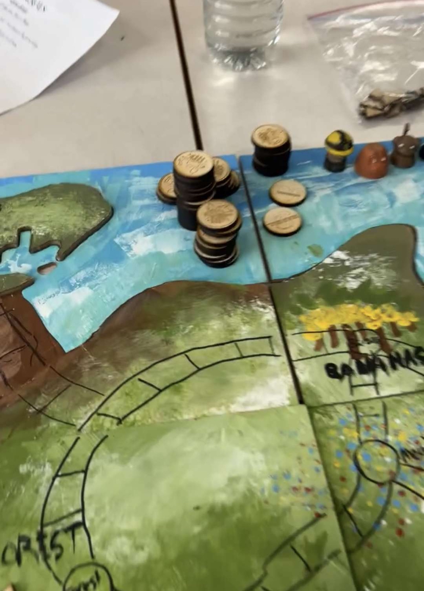
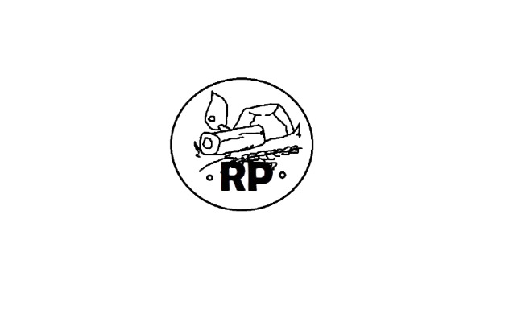
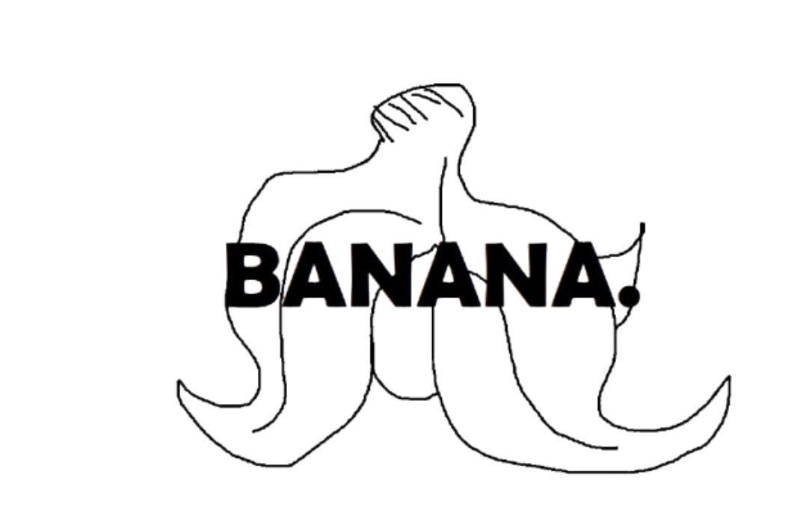
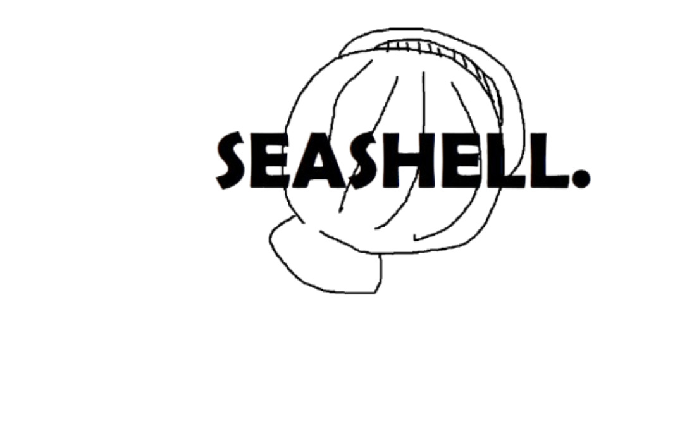

Teamwork
The group project we did this semester was the Board Game project, Ecologically aware monkeys.
For this project, I was the person responsible for the laser cutter.
The trees
For this part of the board game project I was meant to make many small trees for the map, which I did using onshape and sending the svg to the laser cutter


I ended up picking a piece thin wood board to laser cut it on.
Currency, Bananas and Seashells
I made 3 types of tokes for this boardgame using the lasercutter/engraver,
- Resource points
- Bananas
- Seashells
I got the engraving design on top of these coins from Bryan, which I converted to a jpg and put it on the software/
The way I made these was I cadded a circle on onshape that would be the outer ring, then engraved the pictures in the middle of the circles.
Challenges
- I found that my measurements in onshape for the thickness of the piece were slightly incorrect so it was extremely difficult to push the pieces out, but I fixed this in the end by running the laser twice.
- The software for the laser cutter was pretty hard to use, lining up the coins and the circle was pretty difficult, so when I finished one, I just arrayed all of the other ones.
Final thoughts
This was a really fun project, I liked working with others, this made the project much easier to do, and much more fun.
I enjoyed working on